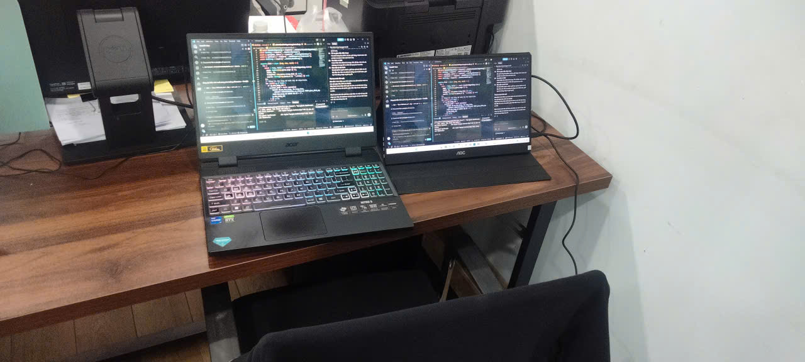
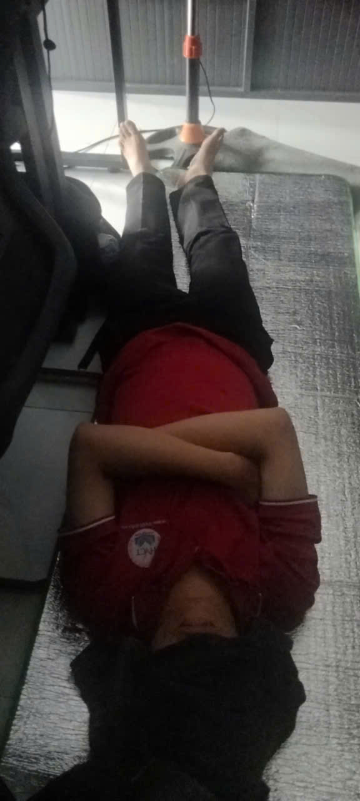
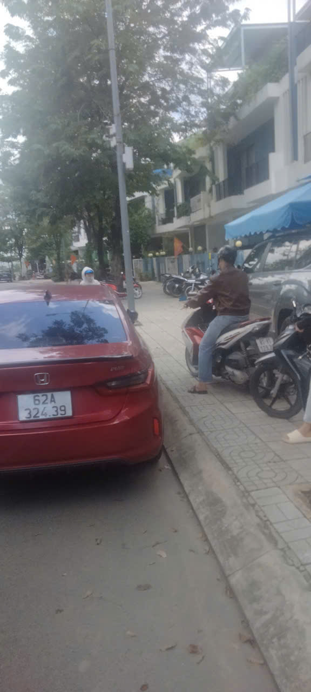
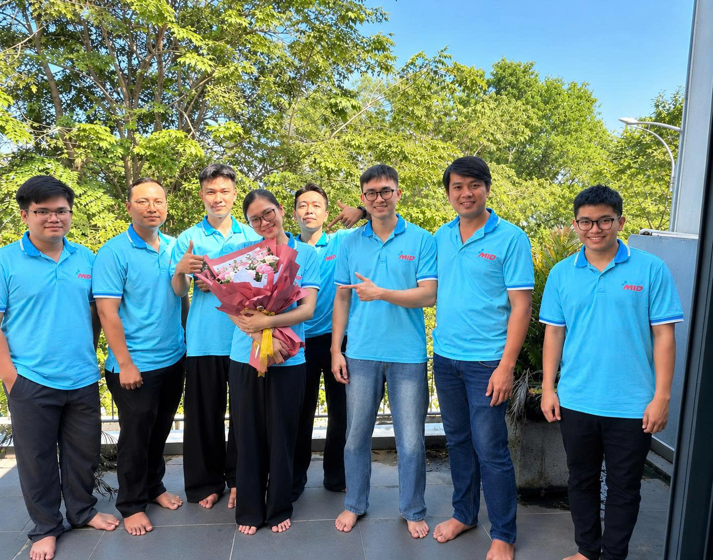

About
Giới thiệu Dương Đức Quân (DuongDucQuan)
Mình là Dương Đức Quân (viết không dấu: Duong Duc Quan), trên mạng dùng tên duongducquan và DuongDucQuan. Mình học lập trình theo hướng Full Stack: tự dựng giao diện, viết API, thiết kế database rồi đưa website lên hosting. Phần lớn công nghệ bên dưới mình học qua đồ án, bài tập cuối kỳ và các dự án cá nhân.
Skills
Kỹ năng và công nghệ đã học
Frontend – xây dựng giao diện web
| Công nghệ | Mình dùng để |
|---|---|
| HTML5 | Dựng cấu trúc website, thẻ ngữ nghĩa |
| CSS3 | Thiết kế giao diện, responsive |
| JavaScript (ES6+) | Xử lý logic, DOM, bất đồng bộ |
| TypeScript | JavaScript có kiểu dữ liệu |
| ReactJS | Xây dựng giao diện SPA |
| Vite | Build tool, khởi tạo dự án React |
| Tailwind CSS | Viết giao diện bằng utility classes |
| Material UI (MUI) | Thư viện component cho React |
Backend – xử lý phía server
| Công nghệ | Mình dùng để |
|---|---|
| Node.js | Chạy JavaScript phía server |
| Express.js | Xây dựng backend và REST API |
| PHP | Lập trình backend |
| CodeIgniter 4 | Framework PHP theo mô hình MVC |
| RESTful API | Thiết kế và quản lý API |
| JWT | Xác thực người dùng bằng token |
| Socket.IO | Giao tiếp thời gian thực |
| Event Loop, libuv | Hiểu cơ chế bất đồng bộ của Node.js |
Cơ sở dữ liệu
MySQL
SQL, JOIN, CRUD, cơ sở dữ liệu quan hệ.
MongoDB
Cơ sở dữ liệu NoSQL.
Connection Pool
Quản lý kết nối database.
Database Design
Thiết kế bảng, quan hệ, khóa chính, khóa ngoại.
JSON
Định dạng trao đổi dữ liệu giữa frontend và backend.
API và giao tiếp thời gian thực
- HTTP: GET, POST, PUT, PATCH, DELETE.
- REST API và JSON, Authentication, Authorization.
- WebSocket và Socket.IO: chat realtime, room, event, emit, broadcast.
- Đồng bộ dữ liệu giữa điện thoại và máy tính.
- Tài liệu API với Swagger UI, OpenAPI; kiểm thử bằng Postman.
GIS – bản đồ và dữ liệu địa lý
Đây là mảng mình đang nghiên cứu trong quá trình thực tập.
| Công nghệ | Nội dung |
|---|---|
| OpenStreetMap (OSM) | Dữ liệu bản đồ mã nguồn mở |
| Nominatim | Geocoding và Reverse Geocoding |
| Overpass API, Overpass Turbo | Truy vấn dữ liệu OSM, công cụ viết và chạy truy vấn |
| GeoJSON | Chuẩn biểu diễn dữ liệu địa lý |
| Node / Way / Relation | Các kiểu đối tượng trong OSM |
| Point / LineString / Polygon | Các dạng hình học địa lý |
| Bounding Box, Latitude / Longitude | Vùng giới hạn tọa độ, vĩ độ và kinh độ |
Kiến trúc phần mềm
MVC, Layered Architecture, Clean Architecture, Modular Monolith, Microservices, Event-Driven Architecture và mẫu Controller – Service – Repository. Mình áp dụng MVC thường xuyên nhất; các kiến trúc còn lại đang ở mức tìm hiểu.
DevOps và triển khai website
- Git và GitHub: quản lý mã nguồn, version control, GitHub Pages.
- Docker: đóng gói ứng dụng bằng container.
- Nginx: web server và reverse proxy.
- Ngrok: public localhost để demo.
- Hosting: Firebase Hosting, Netlify, Vercel, GitHub Pages, Cloudflare Workers.
- CI/CD: tự động hóa build và deploy.
AI và công cụ hỗ trợ lập trình
Groq API để tích hợp chatbot, Prompt Engineering, Claude Code, Gemini, API Integration và VS Code. Mình dùng AI để học nhanh và rà lỗi, còn kiến trúc và logic vẫn tự quyết định.
SEO
SEO On-page mà Dương Đức Quân đã học
SEO On-page là phần tối ưu ngay trên website để Google hiểu nội dung. Với các trang của DuongDucQuan, mình áp dụng:
- Thẻ title và meta description chứa từ khóa chính, độ dài vừa phải.
- Một thẻ H1 cho mỗi trang, các mục con dùng H2, H3 đúng thứ bậc.
- HTML ngữ nghĩa: header, nav, main, article, section, footer.
- Canonical URL để tránh trùng nội dung.
- Open Graph và Twitter Card để chia sẻ đẹp trên mạng xã hội.
- Dữ liệu có cấu trúc JSON-LD (WebSite, ProfilePage, Person, Article, ImageGallery, FAQPage).
- Thuộc tính alt cho hình ảnh, ảnh tối ưu dung lượng, lazy loading.
- Liên kết nội bộ bằng anchor text rõ nghĩa.
- sitemap.xml, robots.txt, xác minh bằng Google Search Console.
- Responsive và tải nhanh cho cả điện thoại.
Projects
Dự án Dương Đức Quân đã làm
🛒 TechShop VN
Website thương mại điện tử bằng Java, Servlet, JSP.
🌾 Nông Sản Sạch
Website bán nông sản bằng CodeIgniter (PHP).
⚡ BuffVIP
Trang quản trị reseller dịch vụ SMM bằng Node.js và Express.
🧱 Web vật liệu xây dựng
Đồ án tốt nghiệp: HTML/CSS, Node.js, MySQL.
Gallery
Bộ sưu tập ảnh của Dương Đức Quân
Kho lưu trữ hình ảnh chân thực, rõ nét của Dương Đức Quân (DuongDucQuan, duongducquan) – lập trình viên Full Stack Web Developer tại TP. Hồ Chí Minh. Bấm vào từng ảnh để xem ở chế độ toàn màn hình, dùng mũi tên ← → để chuyển ảnh:









FAQ
Câu hỏi thường gặp
Dương Đức Quân là ai?
Dương Đức Quân (duongducquan, DuongDucQuan, Duong Duc Quan) là sinh viên và lập trình viên Full Stack Việt Nam, làm web với React, Node.js, PHP, MySQL và đang tìm hiểu thêm GIS, Docker, SEO.
DuongDucQuan biết những công nghệ nào?
HTML5, CSS3, JavaScript, TypeScript, ReactJS, Tailwind CSS, Node.js, Express, PHP, CodeIgniter 4, MySQL, MongoDB, Socket.IO, OpenStreetMap, Git, Docker, Nginx và SEO On-page.
Tìm Dương Đức Quân ở đâu trên mạng?
Trang web duongducquan.vercel.app, GitHub github.com/duongducquan, Facebook DuongDucQuann, TikTok @duongducquan285 và LinkedIn duongducquan.
Links
Tất cả liên kết của Dương Đức Quân (DuongDucQuan)
Danh sách website, mạng xã hội, mã nguồn và nơi triển khai chính thức của duongducquan.
Website cá nhân
- Trang liên kết nhanh – duongducquan.vercel.app/duong-duc-quan
- DuongDucQuan Web – duongducquan.web.app
- Netlify – duongducquan.netlify.app
- Netlify – duongducquann.netlify.app
- Cloudflare Workers – duongducquan.quand7194.workers.dev
Mạng xã hội
- Facebook – facebook.com/DuongDucQuann
- Facebook – facebook.com/duongducquan285
- Facebook – facebook.com/duongducquan.dev
- Facebook – facebook.com/duongducquancutidz285
- TikTok – tiktok.com/@duongducquan285
- LinkedIn – linkedin.com/in/duongducquan
GitHub và mã nguồn
Dự án trên Vercel
- Quanduong – v0-quanduong.vercel.app
- Quannek – v0-quannek.vercel.app
- Giáng Sinh – v0-giangsinh.vercel.app
Công ty
Keywords
Từ khóa và hashtag về Dương Đức Quân
Các chủ đề gắn với Dương Đức Quân (DuongDucQuan) trong bài viết này: